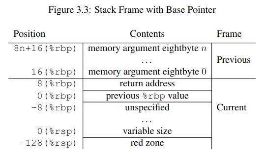
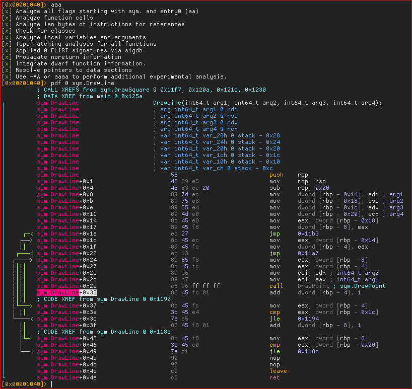
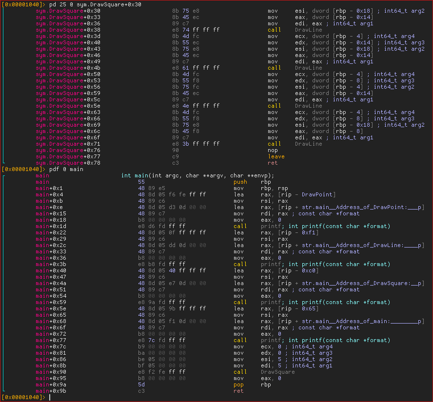

Understanding and traversing the call stack
Table of Contents
1. Introduction
This entry talks about the call stack from a very low-level perspective, so you should be familiar with basic assembly.
First, a brief description of the stack. The stack is a data structure used for storing various kinds of information required by the active procedures of a computer program. The stack is obviously a LIFO system, and it’s usually accessed by pushing or popping data (although this is not always the case, as we will see). The stack usually grows downwards, which is a key detail that might be easy to forget at first.
There are two very important registers when dealing with the stack. The rsp
register (stack pointer) always points to the top of the stack, and the rbp
register (base pointer) is used to delimit stack frames (more on this
below). The rip register will be mentioned as well, since it points to the
address of the next instruction to the one being executed.
When a value is pushed onto the stack the rsp register is decremented, and then
the value is moved onto the top of the stack. Therefore, the rsp register always
points to the last pushed item. Remember that the stack (usually) grows
downwards.
When a value is popped from the stack, the value on top of the stack is moved
into the specified register and the rsp register is incremented.
2. Main uses of the stack
The stack is used mainly for 3 purposes:
- Storing some or all of the function arguments.
- Storing the return address when calling a function.
- Storing data local to the function (preserved registers, local variables, etc.).
When function foo wants to call function bar, it will push some of the arguments
on the stack (this depends on the architecture). Then, it will push the address
of the next instruction (rip register) onto the stack, so bar knows where to
return once it’s done. Then, after foo calls bar, bar might push some of the
registers that need to be preserved by the callee, like rbp or r12, and it will
allocate some space for storing its data, if needed. This will be explained in
more detail below, with an example.
These kind of details are specified in the Application Binary Interface (ABI) of each architecture. For example, if we look in the System V AMD64 ABI (Wikipedia, PDF), we can find the following about the usage of registers and the stack for passing arguments.
System V AMD64 ABI - 3.2.3 Parameter Passing
Once arguments are classified, the registers get assigned (in left-to-right order) for passing as follows:
- If the class is MEMORY, pass the argument on the stack.
- If the class is INTEGER, the next available register of the sequence
rdi,rsi,rdx,rcx,r8andr9is used.- […]
If there are no registers available for any eightbyte of an argument, the whole argument is passed on the stack.
As you can see, unlike in the i386 ABI (PDF, pg. 36-37), not all parameters are passed through the stack.
About preserving the registers, we can also read the following.
System V AMD64 ABI - 3.2.1 Registers and the Stack Frame
If a calling function wants to preserve such a register value across a function call, it must save the value in its local stack frame.
2.1. Implicit push and pop instructions
About the return address, it’s important to note that it is usually pushed
implicitly by the call instruction. The rough translation would be the
following.
; The following: call 0xDEADBEEF ; Internally does: push rip jmp 0xDEADBEEF
Note that the example above is not strictly correct. First, we can’t write or
read from rip directly, and second, rip would point to the jmp instruction
itself, which is not accurate. The correct form would be:
push next jmp 0xDEADBEEF next: nop ; Continue execution...
Just like the return address is pushed implicitly, it’s also popped implicitly
by the ret instruction.
; The following ret ; Internally does (without actually writing to RAX) pop rax jmp rax ; Or simply (although we can't directly write to RIP) pop rip
3. Stack frames
The term stack frame has been mentioned, so let me explain exactly what it
is. Stack frames are used to divide the stack depending on the subroutine that
owns/needs the information. It’s used to indicate, for example, that the region
that foo reserved on the stack belongs to foo, and not bar (since it’s on foo’s
stack frame).
You also have to understand that the specifics about who owns X kind of information vary depending on the convention. For example, the two diagrams in this section use different conventions when it comes to who “owns” the parameters when calling a function. This is not important for understanding the concept of the stack frame itself.
The Wikipedia page has a very good diagram for visualizing how a stack frame is typically organized.

The diagram shows the call stack layout for an upward-growing stack after the
DrawSquare subroutine (shown in blue) called DrawLine (shown in green), which is
the currently executing routine.
When DrawSquare wants to call DrawLine, it pushes its arguments onto the
stack. In this convention, those belong to the stack frame of DrawLine. Then, as
I mentioned, the call instruction will push the return address onto the stack
(i.e. rip, which would contain the next instruction of DrawSquare). Finally,
DrawLine is free to push or allocate space on the stack for his local variables.
Usually, one of the first things a function does is preserve the rbp register
(containing the base pointer of the caller) by pushing it onto the stack
itself. Then, the current value of rsp is saved there throughout the execution
of our procedure. That’s why the following pattern is a common way of
identifying functions from assembly.
func: push rbp mov rbp, rsp ; ... mov rsp, rbp pop rbp ret
3.1. Specifics of the AMD64 ABI
In the last example, the stack grew upwards, which is not normally the case. The next one (from the ABI) shows a more realistic (but perhaps more confusing) version, where the top of the stack is in a lower address than the bottom.

As I mentioned before, the specifics depend on the convention. Unlike in the previous example, in the AMD64 ABI the arguments belong to the stack frame of the caller, not the callee.
3.2. Detailed DrawLine example
As an example, let’s write some of the assembly that DrawLine could be using. To
avoid cluttering the code with comments, I moved the explanation of each part to
the legend below.
In the following code, DrawLine pushes the base pointer (rbp) for preserving the
caller’s stack frame. Then, it saves the value of rsp in rbp, creating its own
stack frame. This allows us to freely change rsp, while being able to access
function arguments and local variables with offsets relative to rbp. This might
seem a bit confusing at first, but it’s a key detail since it essentially
creates a linked list, where you can follow rbp’s to traverse stack frames.
DrawLine: ; (1) push rbp ; (2) mov rbp, rsp ; (3) push rbx ; (4) push r12 sub rsp, 0x20 ; (5) ; The real body of the procedure starts... (6) ;--------------------------------------------------------------------------- mov r12, [rbp + 0x16] ; (7) mov [rbp - 0x8], r12 ; (8) ;--------------------------------------------------------------------------- ; The body of the procedure ends... add rsp, 0x20 ; (9) pop r12 ; (10) pop rbx mov rsp, rbp ; (11) pop rbp ; (12) ret ; (13)
- Right when we got called,
RSPpoints to the return address inDrawSquare, and theDrawLinearguments are right below it, from[RSP+0x8]to[RSP+(n*0x8)]. Note that they are lower on the stack, but higher in memory. - The first thing we usually do is push the old
RBPvalue thatDrawSquarewas using. After pushing it,RSPwill point to the oldRBP, hence the “linked list” ofRBP’s. The return address will be at[RSP+8]after the push. - The current value of
RSPis saved intoRBP, creating our stack frame. This way, we can freely changeRSP, and access parameters with stack offsets relative toRBP. - Now
DrawLineneeds to push some registers that must be preserved by the callee (according to the ABI). After this, the “real” body of the procedure will be able to safely use these registers without overwriting the caller’s values. - The procedure subtracts from
RSPto allocate0x20bytes some space for local variables. - From the procedure body, it might access the function arguments by adding to
RBP, or it might need to store values in the reserved stack space, and access them by subtracting toRBP(e.g. for local variables). - Here, it adds
0x16to the base pointer for “jumping” over both the pushedRBPand the return address, accessing some argument, and saving it intor12. - Then, it saves that value into some of the stack space that we reserved when
subtracting from
RSP. - When we are done, we add back the space previously subtracted from
RSP. - We pop back the registers that had to be preserved by the callee.
- We restore the base pointer into
RSP. - We pop the caller’s
RBPregister. - Finally,
RSPpoints to the return address fromDrawSquare, which was pushed by thecallinstruction. As I said, theretinstruction will pop it and jump to it.
4. Traversing the call stack
Let’s look at some example C code.
#include <stdio.h> void DrawPoint(int x, int y) { printf("Drawing point: %d, %d\n", x, y); } void DrawLine(int x0, int y0, int x1, int y1) { for (int y = y0; y <= y1; y++) for (int x = x0; x <= x1; x++) DrawPoint(x, y); } void DrawSquare(int x, int y, int w, int h) { int x1 = x + w; int y1 = y + h; DrawLine(x, y, x1, y); /* Up */ DrawLine(x, y, x, y1); /* Left */ DrawLine(x, y1, x1, y1); /* Down */ DrawLine(x1, y, x1, y1); /* Right */ }
The call stack for DrawPoint() would be the following:
(???) -> DrawSquare() -> DrawLine() -> DrawPoint()
4.1. The AsmPrintCallStack function
Since we now have a deep understanding of the stack, let’s write some assembly code that prints the backtrace of where we were called.
default rel extern printf section .data fmt: db "%d: %p", 0xA, 0x0 section .text ; void AsmPrintCallStack(int depth); global AsmPrintCallStack AsmPrintCallStack: push rbp mov rbp, rsp push r12 push r13 ; Initialize counter to the first "depth" argument mov r13, rdi ; Get address of old RBP, skip ours mov r12, [rbp] .loop: ; If RBP is NULL, we are done. test r13, r13 jz .done ; Otherwise, we can print it. ; We add 8 to the current RBP to get the current return address. mov rdx, [r12 + 0x8] mov rsi, r13 lea rdi, [rel fmt] call printf wrt ..plt ; And jump to the next one dec r13 mov r12, [r12] jmp .loop .done: pop r13 pop r12 mov rsp, rbp pop rbp ret
Let me briefly explain what’s going on. First, we use default rel to enable
RIP-relative addressing (See also section 3.3 of the NASM manual). More of this
is explained in the next section. We also declare printf as an extern symbol.
On the .data section, we declare our format string, that will be used later when
calling printf.
On the .text section, the function preserves the previous stack frame as we have
seen before. It also preserves r12 and r13, which will be used for storing the
current base pointer and the current counter, respectively.
Then, it initializes the counter (r13) to the first argument of the function
(rdi), and the r12 register to the base pointer of the caller, by dereferencing
our own base pointer. If we moved rbp to r12, instead of [rbp], we would also
print the address of our caller. If you are confused about this, check the
diagram in Specifics of the AMD64 ABI.
Then, the loop starts. We check if the iterator is zero, and if it is, we return
from the function. Otherwise, we will calculate the return address of the
current stack frame by adding 8 to the base pointer. We will then call printf
with the fmt string as its first argument, the iterator as the second one and
the return address we just calculated as its third argument.
After calling printf, we will decrease the iterator and dereference the current
base pointer, jumping to the previous stack frame. Finally, we jump back to the
.loop label.
The rough C translation of the loop would be the following:
while (i != 0) { void* ret_addr = *(cur_base_ptr + 0x8); printf("%d: %p\n", i, ret_addr); i--; cur_base_ptr = *cur_base_ptr; }
4.2. Note about Position Independent Executables
You might be wondering why we had to use wrt ..plt when calling printf. It’s for
the same reason why we have to use lea rdi, [rel fmt] instead of
mov rdi, fmt. Our GCC has -fPIE (Position Independent Executable) enabled by
default. That means that our addresses and calls have to be relative. We have
two solutions for this:
- Disable PIE by passing
-no-pieto GCC when linking. - Adapt our assembly to link with PIE.
I chose to use the second option, so I can explain how it works. If we just used
call print and mov rdi, fmt, and linked with PIE enabled, we would get the
following warnings:
/usr/bin/ld: obj/callstack.asm.o: warning: relocation in read-only section `.text' /usr/bin/ld: obj/callstack.asm.o: relocation R_X86_64_PC32 against symbol `printf@@GLIBC_2.2.5' can not be used when making a PIE object; recompile with -fPIE /usr/bin/ld: final link failed: bad value
Before trying to understand this terrible error message, you need to understand
that the linker asumes all of our object files have been compiled, and not
assembled by hand. Therefore, when it says “recompile with -fPIE”, it’s not
necessarily referring to our C object files, but also our hand-written assembly
ones. You should read the error as “Whoever made this ASM (human or compiler),
make it PIE compatible”.
So, how do we make our assembly PIE compatible? The most important part is that
we need to call printf through the Procedure Linkage Table (PLT), instead of
using a direct call. That’s exactly what wrt ..plt is doing.
That would fix the second linker error, but what about the first warning? That
happens because we are using the mov instruction with the absolute address of
fmt. This creates a 64-bit relocation, since this absolute address isn’t known
until run time, and the dynamic linker has to fill it out. Have a look at the
following assembly.
; Assemble with: ; nasm -f elf64 -o file.o file.asm ; Look at the generated bytes with a RE tool like rizin. section .bss addr: resb 1 section .text _start: mov rax, addr lea rax, [addr] lea rax, [rel addr]
The addr label is being accessed in 3 ways. The first two are using the absolute
address, and will produce a relocation. The third one, calculates the address by
adding (or subtracting) an offset from the instruction pointer (rip). If you
assemble it, and look at the instruction bytes, you can tell the difference
(note the endianness).
48 b8 00 02 00 08 00 00 00 00 movabs rax, 0x8000200 48 8d 04 25 00 02 00 08 lea rax, ds:0x8000200 48 8d 05 e7 ff ff ff lea rax, [rip + 0xffffffffffffffe7] ; [rip - 0x19]
The linker doesn’t like runtime relocations in .text, hence the “relocation in
read-only section .text” warning. Since printf needs an absolute address, we can
convert the RIP-relative address to an absolute one with lea rdi, [rel fmt]. The
rel stands for relative, and although we don’t need it since we specified
default rel at the top, I chose to emphasize it anyway.
Sources:
- StackOverflow 1
- StackOverflow 2 (Check comments)
- Reddit answer (Skeeto saves the day once more)
4.3. Calling it from DrawPoint
Now that we have our AsmPrintCallStack function, we can modify our C code a bit
to call it from DrawPoint.
extern void AsmPrintCallStack(int depth); void DrawPoint(int x, int y) { printf("Drawing point: %d, %d\n", x, y); AsmPrintCallStack(3); }
We will print the last 3 return addresses, one for DrawLine, one for DrawSquare
and the last one for main.
4.4. Our main function
Our main function simply calls DrawSquare().
We will print the addresses of each function from main, so we can verify that
the addresses from AsmPrintCallStack are correct.
int main(void) { printf("(main) Address of DrawPoint: %p\n", DrawPoint); printf("(main) Address of DrawLine: %p\n", DrawLine); printf("(main) Address of DrawSquare: %p\n", DrawSquare); printf("(main) Address of main: %p\n", main); /* DrawPoint only gets called once */ DrawSquare(5, 5, 0, 0); return 0; }
4.5. Makefile
The -fPIE parameter should not be necessary, but I still added it to emphasize
what I mentioned in Note about Position Independent Executables.
CC=gcc CFLAGS=-Wall -Wextra LDFLAGS=-fPIE ASM=nasm ASMFLAGS=-f elf64 OBJS=obj/main.c.o obj/callstack.asm.o BIN=callstack-test.out all: $(BIN) clean: rm -f $(BIN) $(OBJS) $(BIN): $(OBJS) $(CC) $(CFLAGS) -o $@ $^ $(LDFLAGS) obj/main.c.o: main.c @mkdir -p $(dir $@) $(CC) $(CFLAGS) -c -o $@ $< obj/callstack.asm.o: callstack.asm @mkdir -p $(dir $@) $(ASM) $(ASMFLAGS) -o $@ $<
4.6. Checking the output
Then, we can just run make and check the output:
(main) Address of DrawPoint: 0x5a1e3d78e139 (main) Address of DrawLine: 0x5a1e3d78e170 (main) Address of DrawSquare: 0x5a1e3d78e1bf (main) Address of main: 0x5a1e3d78e238 Drawing point: 5, 5 3: 0x5a1e3d78e1a3 2: 0x5a1e3d78e1fc 1: 0x5a1e3d78e2cd Drawing point: 5, 5 3: 0x5a1e3d78e1a3 2: 0x5a1e3d78e20f 1: 0x5a1e3d78e2cd Drawing point: 5, 5 3: 0x5a1e3d78e1a3 2: 0x5a1e3d78e222 1: 0x5a1e3d78e2cd Drawing point: 5, 5 3: 0x5a1e3d78e1a3 2: 0x5a1e3d78e235 1: 0x5a1e3d78e2cd
That looks about right. The only address that’s changing is the second one,
since each call to DrawLine from DrawSquare increments the RIP register by some
bytes.
If we really want to make sure it’s accurate, let’s disassemble the binary and look at the offsets inside the functions. I will be using rizin, but any similar tool will do.
According to our output, the next instruction to the call to DrawPoint should be
at offset +0x33 (0x5a1e3d78e1a3-0x5a1e3d78e170) inside DrawLine. Let’s have a
look.

Indeed, the call to DrawPoint is at +0x2e, and the next instruction is at
+0x33. We can see that this is also the case with DrawSquare and main.
